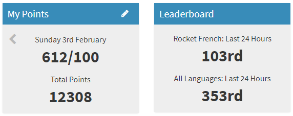

Verslag studentgerichte actie.
Voor de opdracht studentgerichte actie heb ik besloten om te werken aan mijn discipline en werkhouding, ik wilde graag mijzelf verbeteren, meer tijd steken in leren van schoolvakken, maar ook in persoonlijke uitdagingen. Ik heb dus voor mijzelf twee doelen opgesteld: Ik wil consistent elke week aan mijn studie werken, en de tijd nemen om echt te leren voor vakken en toetsen. Ik wil voor mijzelf betere discipline opbouwen met persoonlijke acties en zorgen dat ik mijzelf verbeter.
Om te werken aan mijn studie heb ik besloten om een aantal (2-3) keer per week op school de vakken te leren, dit doe ik meestal samen met Omid en Chevery, we hebben bijvoorbeeld elke week de tijd genomen om development te leren, evenals het oefenen van analyse. Meestal doen we dit op de volgende manier: we spreken een tijd af om samen te komen voor de lessen en werken dan een aantal uur aan de opdrachten van development. Bijvoorbeeld het implementeren van algoritmes voor development 6A, en het opzetten van databases voor development 6B. Het was fijn om regelmatiger te werken, ik heb veel meer het gevoel dat ik nu de lesstof onder de knie krijg.
“Betere discipline” is een heel breed begrip maar ik heb dit persoonlijk ingevuld met een aantal routines die ik nu elke dag volg, ik borstel bijvoorbeeld elke dag tussen mijn tanden met flosdraad en ragers, om mijn mondhygiëne te verbeteren. Ook heb ik besloten om te beginnen met lessen in Frans, deze lessen zijn audio gericht en doe ik elke avond, ook luister ik onderweg naar school nogmaals naar de les om alles goed te herhalen en te onthouden. Dit ben ik nu een 3 maanden aan het doen en ik merk dat ik langzaam meer begin te herkennen en leren.
Mijn voortgang in het taalprogramma dat ik momenteel gebruik.
Mijn ervaring was eigenlijk heel soepel, je moet simpelweg ergens aan beginnen en dit volhouden, dit is iets wat veel mensen zeggen en het klinkt ook heel erg makkelijk. Maar ik heb ervaren dat de beste motivatie vanuit jezelf komt, een routine creëren is moeilijk maar het wordt steeds makkelijker als je het volhoudt. Ik vind zelf dus dat ik best wel een stap heb gemaakt, het is fijn om aan jezelf te werken, beter te worden in iets en discipline op te bouwen en ik ga mijn best doen om dit vol te houden.